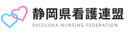

連盟とは静岡県看護連盟は、看護職の処遇と制度をよくするために政治にはたらきかける団体です。現場の声を集めて議員に届け、看護に関する制度や予算の議論に意見を出しています。
投票先や支持政党をお尋ねすることはありません。まずは意見交換会の見学からで大丈夫です。
青年部は、若手の看護職が集まって活動している部会です。
活動の予定は公式LINEでお知らせします。話を聞いてみたいときは、LINEのトークに「相談」と送ってください。青年部の担当からご連絡します。
看護協会と看護連盟は別の組織です。目指す方向は同じで、役割を分けて動いています。
| 看護協会 | 看護連盟 | |
|---|---|---|
| 種類 | 職能団体 | 政治団体 |
| 主な活動 | 研修、資格・キャリアの支援、看護の質の向上 | 議員へのはたらきかけ、制度・予算への意見、選挙での支援 |
| この公式LINE | 協会の研修・イベントも案内します | 運営しているのは連盟の青年部です |